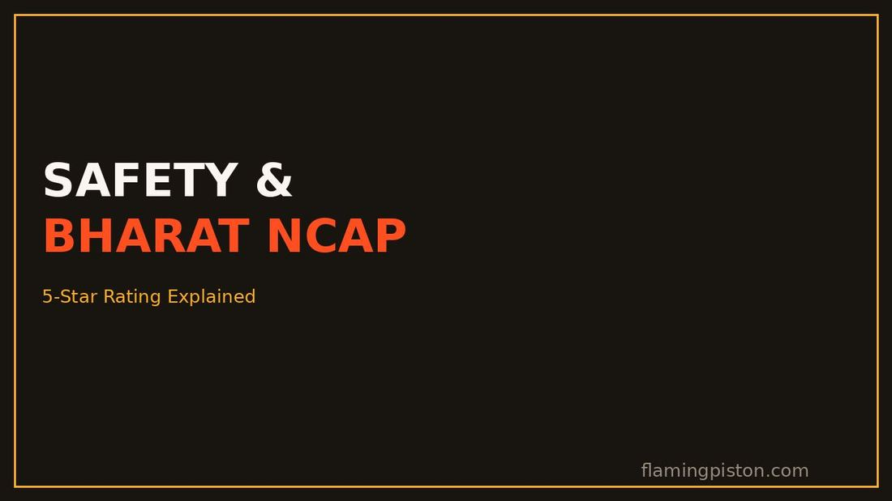

Maruti Brezza Boot Space: 328 Litres on Petrol and CNG (2026)

AI illustration: FlamingPiston
Published Sep 3, 2026 · Updated Nov 23, 2026
6 min read
Category: Compact SUVs
The 2026 Maruti Brezza has a 328-litre boot, and the figure is the same whichever engine you choose: the 1.0 turbo-petrol, the 1.5 petrol (manual or automatic) or the CNG. The CNG keeps the full boot because Maruti has moved its gas cylinder under the car. The catch is that no 2026 Brezza carries a spare tyre; you get a tyre repair kit instead. These figures apply to the 2026 facelift only. On the previous Brezza CNG the cylinder sat in the boot, so check the model year on a used car.
Brezza boot space at a glance
- 328 litres on every powertrain, CNG included
- No spare tyre on any variant: tyre repair kit and jack
- 60:40 split rear seat on ZXi and ZXi+ only
- ISOFIX mounts and six airbags standard on every trim
Boot space by engine and fuel
| Version | Boot | Spare wheel |
|---|---|---|
| 1.0 turbo-petrol, 6MT | 328 litres | None (repair kit) |
| 1.5 petrol, 6MT or 6AT | 328 litres | None (repair kit) |
| 1.5 CNG, 6MT | 328 litres | None (repair kit) |
The CNG version carries a 55-litre (water equivalent) cylinder under the body alongside the 48-litre petrol tank, according to Maruti’s brochure. Maruti says the underbody layout gives the CNG “full boot space”, and Autocar India and CarWale both report the same 328 litres for petrol and CNG.
That is the real change from the older Brezza CNG, where the cylinder sat in the boot itself. Maruti does not publish a boot figure for that older CNG, so we don’t quote one. If you are comparing used listings, open the boot.
The trade-off: no spare tyre on any Brezza
To fit the CNG cylinder under the floor, Maruti has dropped the spare wheel from the whole range, petrol models included. The brochure lists a tyre repair kit with jack as standard. (A footnote in the same brochure still gives a spare tyre size, but Autocar India’s review and its long-term test car both confirm that no spare is supplied.)
A repair kit handles small tread punctures. It will not help with a sidewall cut or a damaged rim. Autocar India’s long-term reviewer called the deletion a mistake for Indian roads and suggested buying an aftermarket spare. That is worth weighing if you drive long distances on poor roads. The Nexon CNG and XUV 3XO CNG (below) both keep a spare wheel under the car.
How much luggage fits in 328 litres?
We have not run our own luggage test on the 2026 Brezza, so here is what two independent publications report. Autocar India says the boot’s square shape makes it more practical than the number suggests. CarDekho describes it as deep but not especially wide or long: in its assessment it takes three to four cabin-size trolley bags plus a couple of small bags, which is enough for airport runs and weekend trips but tight for a week-long family holiday.
Bring your own suitcase or folded pram to the showroom and test it with the rear seat upright. On ZXi and ZXi+ cars, check that the parcel tray closes without pressing on your bags.
Folding the rear seat: which variants split 60:40
The 60:40 split rear seat is not standard. Maruti’s brochure lists it, along with the rear parcel tray, rear centre armrest and luggage lamp, on the ZXi and ZXi+ only. CarDekho’s variant comparison agrees. A split seat lets you carry a long item and still seat one passenger in the back.
| Boot feature | LXi | VXi | ZXi / ZXi+ |
|---|---|---|---|
| 60:40 split rear seat | No | No | Yes |
| Rear parcel tray | No | No | Yes |
| Luggage lamp | No | No | Yes |
| Tyre repair kit and jack | Yes | Yes | Yes |
Maruti does not publish a seats-folded capacity, and the brochure does not say how the LXi and VXi rear seat folds. If that matters to you, check it on the exact variant at the dealer.
Brezza vs Nexon vs XUV 3XO: boot space compared
The Tata Nexon and Mahindra XUV 3XO are the two rivals that, like the Brezza, are sold with both petrol and factory CNG options.
| Model | Petrol boot | CNG boot | CNG spare wheel |
|---|---|---|---|
| Maruti Brezza | 328 litres | 328 litres | None |
| Tata Nexon | 382 litres | 321 litres | Space-saver, under the car |
| Mahindra XUV 3XO | 364 litres | 270 litres | Under the body |
On petrol, the Brezza has the smallest quoted boot of the three. On CNG, it has the largest, because the Nexon and XUV 3XO lose space to twin cylinders under their boot floors. In return, both rivals keep a spare wheel. These are each maker’s quoted figures, and makers do not all measure the same way (Autocar India notes that the Nexon CNG’s 321 litres is measured floor to roof), so treat small differences with caution. For the full CNG comparison, read Brezza CNG vs XUV 3XO CNG. For price, mileage and features, read Brezza vs Tata Nexon.
Rear seat and child-seat safety
Autocar India rates the Brezza as one of the few compact SUVs that can seat three adults abreast at the rear in comfort. On paper it is 1,790 mm wide, with a 2,500 mm wheelbase in a 3,995 mm length.
Every trim gets six airbags, ISOFIX child-seat mounts and three-point seatbelts for all five occupants, according to Maruti’s brochure. The Brezza’s five-star Bharat NCAP rating covers the petrol and turbo-petrol variants. The CNG is not on Bharat NCAP’s list of rated variants. Details are in our Brezza safety and Bharat NCAP guide.
Our take
If you want a CNG compact SUV and need boot space, the 2026 Brezza makes the strongest case of the three: it is the only one whose CNG boot matches its petrol boot. The price is the missing spare wheel, which affects petrol buyers too. If you are buying petrol and drive on poor roads, the Nexon and XUV 3XO quote more boot space and keep a spare. If you need a split-folding rear seat, budget for the ZXi or above. CNG running costs are covered in our Brezza CNG review and petrol vs CNG break-even guide.
What Owners Say
The facelifted Brezza went on sale in July 2026, so owner reports are still early and most cover under 2,000 km. On 23 November 2026 we read owner posts on Team-BHP, CarWale and CarDekho, leaving out test drives, posts about the older model, duplicate reviews and anyone who had not bought or driven the car. These are owners’ experiences, not measured results; we say how many owners each point rests on.
- Big enough for families. Three CarWale owners call the boot practical or enough for family trips.
- But no spare wheel. One owner each on Team-BHP and CarWale names the missing spare wheel as the main drawback.
Owners back our view: the boot is good, the missing spare is the catch.
FAQs
How much boot space does the Maruti Brezza have?
The 2026 Brezza has a 328-litre boot. The figure is the same for the 1.0 turbo-petrol, the 1.5 petrol (manual and automatic) and the CNG.
Does the Brezza CNG have less boot space than the petrol?
Not on the 2026 facelift. Its CNG cylinder sits under the body, so the CNG keeps the full 328 litres. On the previous Brezza CNG the cylinder sat in the boot, so check the model year when looking at a used car.
Does the 2026 Brezza come with a spare tyre?
No. Every 2026 Brezza, petrol or CNG, comes with a tyre repair kit and jack instead of a spare wheel.
Do all Brezza variants get a 60:40 split rear seat?
No. Maruti’s brochure lists the 60:40 split rear seat, rear parcel tray and luggage lamp on the ZXi and ZXi+ only, not on the LXi or VXi.
Is the Brezza’s boot bigger than the Tata Nexon’s?
Not on petrol: the Nexon is quoted at 382 litres against the Brezza’s 328. On CNG, the Brezza’s 328 litres is slightly more than the Nexon CNG’s 321, though the Nexon CNG keeps a spare wheel. Makers don’t all measure boot space the same way, so treat small gaps with caution.
Figures checked 23 November 2026 against Maruti Suzuki’s Brezza brochure and website, Bharat NCAP, Autocar India, CarDekho, CarWale and V3Cars. Boot volumes are the makers’ quoted figures; FlamingPiston has not measured these cars.
More in the Brezza series: Full Review · Real-World Mileage · Variants Explained · Automatic Review · CNG Review · Turbo vs 1.5 Petrol · Maintenance Cost · Safety & NCAP · Pros & Cons · vs Tata Nexon · vs Fronx · vs XUV 3XO CNG
Sources
- Maruti Suzuki: New Brezza brochure (official, PDF)
- Maruti Suzuki: Brezza (official)
- Bharat NCAP: Maruti Brezza (official)
- Autocar India: 2026 Maruti Suzuki Brezza facelift review
- Autocar India: 2026 Maruti Brezza, all that’s new over its predecessor
- Autocar India: Brezza Turbo long-term review, 1,000 km report
- CarDekho: Maruti Brezza
- CarDekho: Brezza ZXi vs ZXi Plus compared
- CarWale: Maruti Brezza
- Autocar India: Tata Nexon specifications
- CarWale: Tata Nexon
- Autocar India: Tata Nexon CNG review
- Autocar India: Mahindra XUV 3XO specifications
- Autocar India: Mahindra XUV 3XO CNG launched
- V3Cars: Mahindra XUV 3XO CNG (ZNG) specs and boot space
Owner discussions
- Team-BHP: 2026 Maruti Suzuki Brezza facelift review, owner posts
- CarWale: Maruti Brezza owner reviews
Links checked 23 November 2026. Figures from other publications’ reviews and tests are attributed in the text. Owner reports were read on 23 November 2026; we do not show usernames.